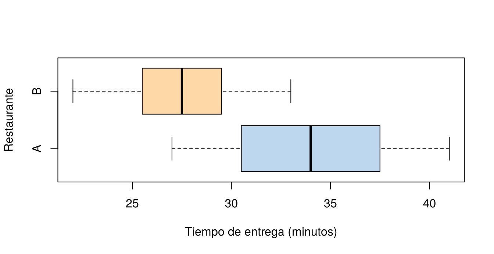

Muchas preguntas comparan dos grupos. ¿Entrega más rápido un restaurante que otro? ¿Bajó el peso de los participantes después de un programa de entrenamiento? ¿Es mayor la satisfacción de los clientes en una sede que en otra? Para responderlas se construye un intervalo de confianza para la diferencia entre los dos grupos.
La forma de calcularlo depende de cómo se obtuvieron los datos: muestras independientes o pareadas. Esta página presenta los dos casos, el intervalo para la diferencia de proporciones y el cociente de varianzas. Los bloques de código se ejecutan en orden.
| Diseño | Cómo se obtienen los datos | Ejemplo |
|---|---|---|
| Independientes | Los dos grupos tienen unidades distintas, sin relación entre sí | Tiempos de entrega de dos restaurantes |
| Pareadas | Cada dato de un grupo tiene una pareja en el otro: la misma persona medida dos veces, o dos unidades emparejadas | Peso de las mismas personas antes y después de un programa |
Identificar el diseño es el primer paso, porque usar el método equivocado puede cambiar por completo la conclusión, como se verá en el ejemplo del gimnasio.
El intervalo para la diferencia de medias, \(\mu_1 - \mu_2\), es
\[ (\bar{x}_1 - \bar{x}_2) \;\pm\; t \times \sqrt{\frac{s_1^2}{n_1} + \frac{s_2^2}{n_2}} \]
Esta versión, llamada de Welch, no supone que las
dos poblaciones tengan la misma varianza, y es la que usa
t.test() por defecto. Existe otra versión que supone
varianzas iguales (var.equal = TRUE), pero no conviene
elegirla según una prueba previa de varianzas: Welch funciona bien en
los dos casos.
Ejemplo. Se registró el tiempo de entrega, en minutos, de 15 domicilios del restaurante A y 12 del restaurante B:
rest_A <- c(35, 28, 41, 32, 30, 38, 27, 36, 33, 40, 29, 34, 37, 31, 39)
rest_B <- c(27, 31, 24, 29, 26, 30, 22, 28, 25, 33, 27, 29)
c(media_A = mean(rest_A), media_B = mean(rest_B)) media_A media_B
34.00000 27.58333 t.test(rest_A, rest_B)$conf.int[1] 3.409432 9.423901
attr(,"conf.level")
[1] 0.95Con 95 % de confianza, el restaurante A tarda en promedio entre 3.4 y 9.4 minutos más que el B. Como el intervalo no contiene el 0, los datos indican que hay una diferencia real entre los dos restaurantes.
boxplot(list(A = rest_A, B = rest_B), horizontal = TRUE, col = c("#BDD7EE", "#FFD8A8"),
xlab = "Tiempo de entrega (minutos)", ylab = "Restaurante")
Tiempos de entrega de los dos restaurantes.
En muestras pareadas se calcula la diferencia dentro de cada pareja, \(d_i = x_{1i} - x_{2i}\), y se construye el intervalo para la media de esas diferencias, \(\mu_d\), como en Intervalos para una población:
\[ \bar{d} \;\pm\; t_{n-1} \times \frac{s_d}{\sqrt{n}} \]
Ejemplo: programa de un gimnasio. Se registró el peso, en kilogramos, de 16 personas antes y después de un mes de un programa de entrenamiento. La diferencia es \(d\) = antes − después, así que una diferencia positiva indica que la persona bajó de peso.
antes <- c(104.5, 89, 84.5, 106, 90, 96, 79, 90, 85, 76.5, 91.5, 82.5, 100.5, 89.5, 121.5, 72)
despues <- c(98, 85.5, 85, 103.5, 88.5, 95, 79.5, 90, 82, 76, 89.5, 81, 99.5, 86.5, 115.5, 70)
d <- antes - despues
d [1] 6.5 3.5 -0.5 2.5 1.5 1.0 -0.5 0.0 3.0 0.5 2.0 1.5 1.0 3.0 6.0
[16] 2.0mean(d)[1] 2.0625t.test(antes, despues, paired = TRUE)$conf.int[1] 0.9797049 3.1452951
attr(,"conf.level")
[1] 0.95Con 95 % de confianza, el programa reduce el peso en promedio entre 0.98 y 3.15 kg. El intervalo está por encima de 0: los participantes bajaron de peso.
Si se analizan los mismos datos como si fueran dos grupos independientes, el intervalo cambia por completo:
t.test(antes, despues)$conf.int[1] -6.520661 10.645661
attr(,"conf.level")
[1] 0.95El intervalo va de −6.5 a 10.6 kg y contiene el 0: se concluiría que no hay evidencia de cambio. La razón es que los pesos varían mucho de una persona a otra, de 72 a 121 kg, y esa variación tapa el efecto del programa. Al trabajar con las diferencias, cada persona se compara consigo misma y la variación entre personas desaparece.
El intervalo para la diferencia de proporciones, \(p_1 - p_2\), es
\[ (\hat{p}_1 - \hat{p}_2) \;\pm\; z \times \sqrt{\frac{\hat{p}_1(1 - \hat{p}_1)}{n_1} + \frac{\hat{p}_2(1 - \hat{p}_2)}{n_2}} \]
Ejemplo. En la sede de Cali, 152 de 200 clientes están satisfechos (76 %); en la de Bogotá, 126 de 200 (63 %):
p1 <- 152 / 200
p2 <- 126 / 200
(p1 - p2) + c(-1, 1) * 1.96 * sqrt(p1 * (1 - p1) / 200 + p2 * (1 - p2) / 200)[1] 0.04066398 0.21933602prop.test(c(152, 126), c(200, 200), correct = FALSE)$conf.int # el mismo intervalo[1] 0.04066562 0.21933438
attr(,"conf.level")
[1] 0.95Con 95 % de confianza, la proporción de clientes satisfechos en Cali
es entre 4.1 y 21.9 puntos porcentuales mayor que en Bogotá. Con
correct = FALSE, prop.test() da el mismo
intervalo de la fórmula; por defecto aplica una corrección por
continuidad que lo hace un poco más ancho.
Para comparar la variabilidad de dos grupos se usa el cociente \(\sigma_1^2/\sigma_2^2\) y la distribución F
de Distribución muestral. En
R se calcula con var.test():
var(rest_A) / var(rest_B)[1] 2.096902var.test(rest_A, rest_B)$conf.int[1] 0.6242991 6.4890525
attr(,"conf.level")
[1] 0.95El intervalo para el cociente de varianzas va de 0.62 a 6.49. Como contiene el 1, los datos no muestran evidencia de que un restaurante sea más variable que el otro. Esto no prueba que las varianzas sean iguales: con muestras tan pequeñas, el intervalo es muy ancho. Este intervalo, además, depende mucho de que las dos poblaciones sean normales.
| El intervalo para \(\mu_1 - \mu_2\) o \(p_1 - p_2\)… | Indica que… |
|---|---|
| Está todo por encima de 0 | El grupo 1 tiene un valor mayor |
| Está todo por debajo de 0 | El grupo 1 tiene un valor menor |
| Contiene el 0 | Los datos no muestran evidencia de diferencia; no prueba que sean iguales |
Para un cociente de varianzas, el valor de referencia es 1 en lugar de 0. Además de ver si contiene o no el 0, conviene mirar el tamaño de la diferencia: un intervalo de 0.1 a 0.3 minutos puede ser estadísticamente claro, pero sin importancia práctica.
| Problema | Causa | Solución |
|---|---|---|
| Analizar datos de antes y después como muestras independientes | No se identificó el diseño | Usar paired = TRUE o trabajar con las
diferencias |
| Interpretar al revés el signo de la diferencia | No se fijó el orden de la resta | Escribir siempre qué grupo se resta de cuál |
| Concluir que dos grupos son iguales porque el intervalo contiene el 0 | No encontrar diferencia no prueba igualdad | Decir que no hay evidencia de diferencia, y mirar el ancho del intervalo |
| Elegir entre Welch y varianzas iguales según una prueba previa | La prueba previa altera el nivel de confianza | Usar Welch, que es lo que hace t.test()
por defecto |
| Concluir que un programa causa el cambio sin grupo de comparación | Sin grupo control, otros factores pueden explicar el cambio | Comparar con un grupo que no recibió el programa |
Dos máquinas llenan bolsas de café. Los pesos, en gramos, de muestras de cada una son: máquina 1: 501, 499, 503, 498, 502, 500, 504, 497; máquina 2: 496, 499, 495, 498, 497, 494, 500, 496, 498. Construya el intervalo del 95 % para la diferencia de medias e interprételo.
maq1 <- c(501, 499, 503, 498, 502, 500, 504, 497)
maq2 <- c(496, 499, 495, 498, 497, 494, 500, 496, 498)
t.test(maq1, maq2)$conf.int[1] 1.172507 5.827493
attr(,"conf.level")
[1] 0.95Con 95 % de confianza, la máquina 1 llena en promedio entre 1.2 y 5.8 g más que la máquina 2.
Ocho estudiantes presentaron una prueba antes y después de un curso de nivelación. Antes: 52, 61, 48, 70, 55, 63, 58, 66; después: 58, 65, 50, 74, 60, 64, 63, 70. Construya el intervalo del 95 % para la mejora promedio.
La mejora es después − antes:
antes_r2 <- c(52, 61, 48, 70, 55, 63, 58, 66)
despues_r2 <- c(58, 65, 50, 74, 60, 64, 63, 70)
t.test(despues_r2, antes_r2, paired = TRUE)$conf.int[1] 2.502186 5.247814
attr(,"conf.level")
[1] 0.95Con 95 % de confianza, el puntaje sube en promedio entre 2.5 y 5.2 puntos. Sin un grupo que no haya tomado el curso, no se puede afirmar que la mejora se deba al curso.
Una campaña por correo logró 45 compras de 600 envíos, y una por mensaje de texto, 62 compras de 650 envíos. Construya el intervalo del 95 % para la diferencia de proporciones (texto − correo). ¿Hay evidencia de que una campaña funcione mejor?
prop.test(c(62, 45), c(650, 600), correct = FALSE)$conf.int[1] -0.01050415 0.05127338
attr(,"conf.level")
[1] 0.95El intervalo va de −1.1 a 5.1 puntos porcentuales y contiene el 0: los datos no muestran evidencia clara de que una campaña funcione mejor que la otra.
Última revisión: 7 de noviembre de 2026.